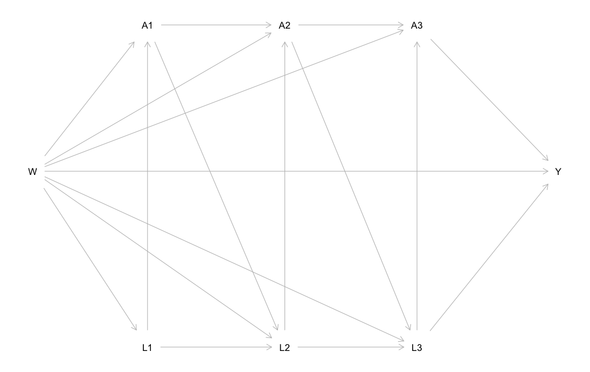

Getting Started with LMTP
intro-lmtp.RmdAuthors: Nick Williams and Ivan Diaz
Updated: 2020-10-01
This document serves as an introductory guide to using the lmtp package. lmtp provides an estimation framework for the causal effects of longitudinal modified treatment policies using ensemble machine learning as described in Diaz, Williams, Hoffman, and Schenck (2020). While originally developed to estimate the effect of continuous exposures, lmtp naturally extends to allowing the estimation of traditional causal effects based on binary and categorical exposures in both point treatment and time-varying situations.
While not possible to cover everything, this introductory guide should equip users of lmtp with enough knowledge to handle the majority of use cases. In addition, we assume the analyst has basic knowledge of non-parametric estimation for causal inference; the specifics of the methodology behind the provided functions is not discussed.
library(lmtp)
Functions & parameters
The goal of this section is to introduce the main
lmtpfunctions and develop a basic understanding of required and useful function parameters.
The estimators
lmtp supplies 2 main estimators:
- a targeted maximum likelihood (TML) estimator:
lmtp_tmle() - a sequentially doubly robust (SDR) estimator:
lmtp_sdr()
Two auxiliary estimators are also provided, however, the use of these estimators is recommended against in favor of the TML or SDR estimators:
- a G-computation (substitution) estimator:
lmtp_sub() - an inverse probability of treatment weighting (IPW) estimator:
lmtp_ipw()
Parameter overview
The following table describes lmtp parameters across the provided estimators:
| Parameter | TMLE | SDR | Substitution | IPW |
|---|---|---|---|---|
| data | ✓ | ✓ | ✓ | ✓ |
| trt | ✓ | ✓ | ✓ | ✓ |
| outcome | ✓ | ✓ | ✓ | ✓ |
| baseline | ✓ | ✓ | ✓ | ✓ |
| time_vary | ✓ | ✓ | ✓ | ✓ |
| cens | ✓ | ✓ | ✓ | ✓ |
| k | ✓ | ✓ | ✓ | ✓ |
| shift | ✓ | ✓ | ✓ | ✓ |
| outcome_type | ✓ | ✓ | ✓ | |
| bounds | ✓ | ✓ | ✓ | |
| learners | ✓ | ✓ | ||
| learners_outcome | ✓ | ✓ | ||
| learners_trt | ✓ | ✓ | ||
| folds | ✓ | ✓ | ✓ | ✓ |
While many parameters aren’t required, the default options will likely give sub par (or incorrect) results. Special attention should be given to the k parameter which is fully described in the Node lists & Markov processes section.
sl3
lmtp can be enhanced by using the sl3 package for ensemble machine learning during estimation procedures. sl3 may be installed from GitHub using:
remotes::install_github("tlverse/sl3@devel")
To fully take advantage of the provided estimators, users must create sl3 learner stacks. Learner stacks are passed to lmtp estimators either through the learners argument for lmtp_sub() and lmtp_ipw() or the learners_trt and learners_outcome arguments for lmtp_tmle() and lmtp_sdr(). A full list of supplied sl3 learners can be found here.
The easiest way to create an sl3 learner stack is using sl3::make_learner_stack().
library(sl3) # using learner defaults lrnrs <- make_learner_stack(Lrnr_mean, Lrnr_glm, Lrnr_ranger) # specifying learner parameters lrnrs <- make_learner_stack( Lrnr_mean, Lrnr_glm, list(Lrnr_ranger, num.trees = 1000) )
The outcome type should guide users on selecting the appropriate learners for a stack when specifying learners with lmtp_sub() or learners_outcome with lmtp_tmle() and lmtp_sdr(). Regardless of whether an exposure/treatment is continuous, binary, or categorical, the exposure mechanism is estimated through classification, thus the analyst should only use sl3 learners that can handle a binary outcome when specifying learners with lmtp_ipw() or learners_trt with lmtp_tmle() or lmtp_sdr().
The ensemble meta-learner is always set to Lrnr_nnls. If learner stacks aren’t provided, lmtp estimators default to an ensemble only made of Lrnr_mean and Lrnr_glm.
lmtpis a peacock, if you want to let it fly, you should use a more comprehensive learner than supplied by the defaults.
It is recommended the analyst reads through the sl3 documentation to fully utilize lmtp.
Node lists & Markov processes
when in doubt, use
k = Inf
Estimating causal effects in longitudinal settings requires paying special attention to the time-ordering and relationships among covariates. In the lmtp framework, there are 5 types of variables: treatment, outcome, baseline, time-varying, and censoring. Treatment and outcome variables are self-explanatory, baseline variables are those that are observed pre-treatment allocation, don’t change (i.e., age at treatment assignment), and always are used for estimation at all time points, time-varying variables are variables that (you guessed it…) change over time, censoring nodes indicate if an observation is observed (or censored) at the next time-point.
How these nodes are specified depends on the specific data generating mechanism and should be pre-specified based on a conceptual model (i.e, a DAG). How these nodes are used by lmtp estimators is specified by what we call a node list. The analyst doesn’t explicitly create the node list themself, but instead supplies the variables and the instructions on how to combine; this is done through the k parameter.
Creating a node list is best understood through demonstration. The following DAG specifies 1 baseline node, W, 3 treatment nodes, A1, A2, A3, 3 time-varying nodes, L1, L2, L3, and an outcome, Y.

According to the DAG, Y is directly affected by all nodes in the model, k = Inf would be the correct instructions for creating this node list.
a <- c("A1", "A2", "A3") baseline <- c("W") nodes <- list(c("L1"), c("L2"), c("L3")) # we can make sure our specification is correct by checking create_node_list() create_node_list(a, 3, nodes, baseline = baseline, k = Inf) #> $trt #> $trt[[1]] #> [1] "W" "L1" "A1" #> #> $trt[[2]] #> [1] "W" "L1" "L2" "A1" "A2" #> #> $trt[[3]] #> [1] "W" "L1" "L2" "A1" "L3" "A2" "A3" #> #> #> $outcome #> $outcome[[1]] #> [1] "W" "L1" "A1" #> #> $outcome[[2]] #> [1] "W" "L1" "A1" "L2" "A2" #> #> $outcome[[3]] #> [1] "W" "L1" "A1" "L2" "A2" "L3" "A3"
Notice that the time-varying covariates are specified using a list of vectors, allowing the analyst to specify multiple time-varying covariates at each time-point of observation. If provided, the length of this list should be the same length as the treatment vector, a in this example (the one exception to this rule is in Survival analysis).
What if we modify the DAG so that Y is only directly affected by A3, L3, and W? We could say this data generating mechanism is now a Markov process and the correct k would be k = 0.

a <- c("A1", "A2", "A3") baseline <- c("W") nodes <- list(c("L1"), c("L2"), c("L3")) # again checking or specification create_node_list(a, 3, nodes, baseline = baseline, k = 0) #> $trt #> $trt[[1]] #> [1] "W" "L1" "A1" #> #> $trt[[2]] #> [1] "W" "L2" "A1" "A2" #> #> $trt[[3]] #> [1] "W" "L3" "A2" "A3" #> #> #> $outcome #> $outcome[[1]] #> [1] "W" "L1" "A1" #> #> $outcome[[2]] #> [1] "W" "L2" "A2" #> #> $outcome[[3]] #> [1] "W" "L3" "A3"
Censoring nodes are discussed in the Censored outcomes section.
Calculating effects
The goal of this section is to identify how to estimate different causal effects using
lmtpestimators.
Deterministic causal effects
A deterministic causal effect is the causal effect of any intervention where the exposure level is set deterministically. For example, the average treatment effect considers the difference in population mean outcomes when an exposure or treatment is deterministically applied to everyone versus when it is applied to no one.
Modified treatment policies
A modified treatment policy is an intervention that can depend on the natural value of the exposure. This allows for the formulation of hypothetical interventions that can avoid positivity violations and may be considered feasible. Interested readers are referred to Diaz, Williams, Hoffman, and Schenck (2020) and Haneuse and Rotnitzky (2013), for an overview of modified treatment policies and their advantages compared to deterministic causal effects.
Shift functions
To estimate the effect of a deterministic causal intervention or a modified treatment policy with lmtp we need to translate these interventions into a shift function. Shift functions are applied to treatment nodes at each time point. They should take 2 arguments, the first being one for the data and the second for the name of the current treatment node. A shift function for a intervention where the exposure decreases by 1 unit for all observations at every time point would look like:
shift <- function(data, trt) { data[[trt]] - 1 }
We may also be interested in the effect of a modified treatment policy where exposure is decreased by 1 unit only among subjects whose exposure won’t go below 1 if intervened upon:
shift <- function(data, trt) { (data[[trt]] - 1) * (data[[trt]] - 1 >= 1) + data[[trt]] * (data[[trt]] - 1 < 1) }
Shift functions are passed to lmtp estimators through the shift argument.
# using the previous shift function with sdr a <- c("A_1", "A_2", "A_3", "A_4") time_varying <- list(c("L_1"), c("L_2"), c("L_3"), c("L_4")) lmtp_sdr(sim_t4, a, "Y", time_vary = time_varying, k = 0, shift = shift, folds = 5) #> LMTP Estimator: SDR #> Trt. Policy: (shift) #> Population intervention effect #> Estimate: 0.2636 #> Std. error: 0.0176 #> 95% CI: (0.229, 0.2981)
Binary treatment
In the case of a binary treatment/exposure the shift function would simply set treatment/exposure to either 0 or 1 depending on the effect of interest. Two helper shift functions are pre-packaged for this: static_binary_on() and static_binary_off().
# a binary trt example data("iptwExWide", package = "twang") a <- paste0("tx", 1:3) nodes <- list(c("gender", "age", "use0"), c("use1"), c("use2")) lmtp_tmle(iptwExWide, a, "outcome", time_vary = nodes, shift = static_binary_on, outcome_type = "continuous", folds = 5) #> LMTP Estimator: TMLE #> Trt. Policy: (static_binary_on) #> Population intervention effect #> Estimate: -0.2871 #> Std. error: 0.043 #> 95% CI: (-0.3714, -0.2028)
Categorical treatment
To evaluate the effect of an intervention on a categorical exposure, the shift function needs to respect the potential levels of the variable, even when those levels may not be observed. Categorical treatment nodes should be coded as factors and dummy variables should not be created.
a <- c("A_1", "A_2", "A_3", "A_4") time_varying <- list(c("L_1"), c("L_2"), c("L_3"), c("L_4")) # converting the observed exposures to an ordered factor sim_t4_fct <- sim_t4 for (i in a) { sim_t4_fct[[i]] <- factor(sim_t4[[i]], levels = 0:5, ordered = T) } # a shift function that respects that exposure is an ordered factor shift <- function(data, a) { out <- list() for (i in 1:length(data[[a]])) { if (as.character(data[[a]][i]) %in% c("0", "1")) { out[[i]] <- as.character(data[[a]][i]) } else { out[[i]] <- as.numeric(as.character(data[[a]][i])) - 1 } } factor(unlist(out), levels = 0:5, ordered = T) } lmtp_sdr(sim_t4_fct, a, "Y", time_vary = time_varying, k = 0, shift = shift, folds = 2) #> LMTP Estimator: SDR #> Trt. Policy: (shift) #> Population intervention effect #> Estimate: 0.3067 #> Std. error: 0.0177 #> 95% CI: (0.272, 0.3414)
Dynamic treatment regimes
Dynamic treatment regimes are treatment rules where treatment is applied based on a fixed rule that depends on covariate history. lmtp is capable of estimating the effects of deterministic dynamic treatment rules as well as dynamic modified treatment policies.
a <- c("A_1", "A_2", "A_3", "A_4") time_varying <- list(c("L_1"), c("L_2"), c("L_3"), c("L_4")) # our same shift function shift <- function(data, trt) { (data[[trt]] - 1) * (data[[trt]] - 1 >= 1) + data[[trt]] * (data[[trt]] - 1 < 1) } # creating a dynamic mtp that applies the shift function # but also depends on history and the current time dynamic_mtp <- function(data, trt) { if (trt == "A_1") { # if its the first time point, follow the same mtp as before shift(data, trt) } else { # otherwise check if the time varying covariate equals 1 ifelse(data[[sub("A", "L", trt)]] == 1, shift(data, trt), # if yes continue with the policy data[[trt]]) # otherwise do nothing } } lmtp_tmle(sim_t4, a, "Y", time_vary = time_varying, k = 0, shift = dynamic_mtp) #> LMTP Estimator: TMLE #> Trt. Policy: (dynamic_mtp) #> Population intervention effect #> Estimate: 0.2364 #> Std. error: 0.0112 #> 95% CI: (0.2145, 0.2583)
Censored outcomes
In the (likely) case of missing outcomes, lmtp can estimate the effect of a hypothetical treatment regime where all observations remained uncensored at end of follow-up. To do this, the user must supply a vector containing the names of censoring indicators for each treatment time point to lmtp estimators through the cens argument. Censoring nodes should be defined such that at any time, \(t\), if an observation is observed at time \(t + 1\) they receive a 1 and a 0 otherwise.
Note: Censoring nodes must be provided if there are missing outcomes.
# all observations that were observed through time 1 head(sim_cens[sim_cens$C1 == 1, ]) # all observations censored after time 1 head(sim_cens[sim_cens$C1 == 0, ]) # all observations censored after time 2 head(sim_cens[sim_cens$C2 == 0, ]) #> L1 A1 C1 L2 A2 C2 Y #> 1 0 0.7930531 1 0 0.4098544 1 0 #> 2 1 3.9568969 1 1 7.1306144 1 1 #> 3 0 -0.9803504 1 0 -2.7858973 1 0 #> 4 1 0.8833268 1 1 1.1372421 1 1 #> 5 1 3.1666751 1 1 7.4640462 1 1 #> 6 1 3.5393771 1 1 9.5161813 1 1 #> L1 A1 C1 L2 A2 C2 Y #> 48 1 3.260499 0 NA NA 0 NA #> 58 1 1.109737 0 NA NA 0 NA #> 67 1 1.376540 0 NA NA 0 NA #> 112 1 3.832451 0 NA NA 0 NA #> 114 1 1.241776 0 NA NA 0 NA #> 115 1 2.390811 0 NA NA 0 NA #> L1 A1 C1 L2 A2 C2 Y #> 30 0 -1.5671983 1 1 -2.9243170 0 NA #> 40 1 -0.2911170 1 1 1.5954122 0 NA #> 48 1 3.2604987 0 NA NA 0 NA #> 55 0 -0.4747829 1 1 0.2138251 0 NA #> 58 1 1.1097371 0 NA NA 0 NA #> 67 1 1.3765396 0 NA NA 0 NA
# estimating an effect when there is censoring a <- c("A1", "A2") nodes <- list(c("L1"), c("L2")) cens <- c("C1", "C2") lmtp_tmle(sim_cens, a, "Y", time_vary = nodes, cens = cens, k = 0, shift = function(data, trt) data[[trt]] + 0.5) #> LMTP Estimator: TMLE #> Trt. Policy: (function(data, trt) data[[trt]] + 0.5) #> Population intervention effect #> Estimate: 0.8872 #> Std. error: 0.0097 #> 95% CI: (0.8683, 0.9061)
Survival analysis
Time-to-event analyses are supported for both time-invariant and time-varying exposures. The outcome argument should be provided a vector containing the names of intermediate outcome variables as well as the final outcome variable. This means that if the time_vary argument is supplied a list of length \(\tau\) then the length of the vector supplied to the outcome argument should be of length \(\tau + 1\).
For time-to-event problems, the intermediate outcome variables serve as indicators for when an observation experiences the event before the end of follow-up. If an observation does experience the event before the final outcome time, all future outcome variables (including the final outcome) variable should be set to 1. The function event_locf() (last observation carried forward, only for events) is provided to help with this imputation.
The following example shows how to estimate the cumulative incidence of an event at time \(\tau + 1 = 7\) under a hypothetical intervention where all subjects point treatment is set to 1.
head(sim_point_surv) a <- "trt" y <- paste0("Y.", 1:6) cens <- paste0("C.", 0:5) baseline <- c("W1", "W2") lmtp_tmle(sim_point_surv, a, y, baseline, cens = cens, shift = static_binary_on, folds = 2) #> LMTP Estimator: TMLE #> Trt. Policy: (static_binary_on) #> Population intervention effect #> Estimate: 0.8155 #> Std. error: 0.0188 #> 95% CI: (0.7787, 0.8522) #> W1 W2 trt Y.0 C.0 Y.1 C.1 Y.2 C.2 Y.3 C.3 Y.4 C.4 Y.5 C.5 Y.6 #> 1 0 0 0 0 1 0 1 0 1 0 0 NA 0 NA 0 NA #> 2 0 1 1 0 1 0 1 0 1 0 0 NA 0 NA 0 NA #> 3 1 1 1 0 1 0 1 0 1 0 1 0 1 0 0 NA #> 4 1 1 1 0 1 0 1 0 1 0 1 1 0 1 0 1 #> 5 0 1 1 0 1 0 1 0 1 0 1 0 0 NA 0 NA #> 6 1 2 1 0 1 0 1 0 1 0 1 0 1 0 1 1 #> #> #>
Population mean outcome
In certain situations, the user may be interested in the population mean outcome under no intervention. In the presence of censoring, this can be estimated by setting shift = NULL and providing censoring indicators.
a <- c("A1", "A2") nodes <- list(c("L1"), c("L2")) cens <- c("C1", "C2") lmtp_tmle(sim_cens, a, "Y", time_vary = nodes, cens = cens, k = 0, shift = NULL) #> LMTP Estimator: TMLE #> Trt. Policy: (NULL) #> Population intervention effect #> Estimate: 0.7978 #> Std. error: 0.0129 #> 95% CI: (0.7724, 0.8231)
Calculating contrasts
The effects returned by lmtp estimators are population intervention effects, that is the expected mean outcome in the population under the hypothetical intervention. Often, however, we are also interested in the comparison of different interventions to each other or to no intervention at all. This is the role of lmtp_contrast().
a <- c("A1", "A2") nodes <- list(c("L1"), c("L2")) cens <- c("C1", "C2") fit_shift <- lmtp_tmle(sim_cens, a, "Y", time_vary = nodes, cens = cens, k = 0, shift = function(data, trt) data[[trt]] + 0.5, folds = 2) fit_noshift <- lmtp_tmle(sim_cens, a, "Y", time_vary = nodes, cens = cens, k = 0, shift = NULL, folds = 2) lmtp_contrast(fit_shift, ref = fit_noshift, type = "additive") #> LMTP Contrast: additive #> Null hypothesis: theta == 0 lmtp_contrast(fit_shift, ref = fit_noshift, type = "rr") #> LMTP Contrast: relative risk #> Null hypothesis: theta == 1 #> #> #> theta shift ref std.error conf.low conf.high p.value #> 1 0.0909 0.887 0.796 0.00564 0.0799 0.102 <0.001 #> #> #> theta shift ref std.error conf.low conf.high p.value #> 1 1.11 0.887 0.796 0.00764 1.1 1.13 <0.001
Any number of lmtp fits can specified in lmtp_contrast() to be compared to either a single reference fit or a known scalar.
lmtp_contrast(fit_shift, fit_noshift, ref = 0.787) #> Non-estimated reference value, defaulting type = 'additive'. #> LMTP Contrast: additive #> Null hypothesis: theta == 0 #> #> #> theta shift ref std.error conf.low conf.high p.value #> 1 0.10023 0.887 0.787 0.00975 0.0811 0.1194 <0.001 #> 2 0.00929 0.796 0.787 0.01293 -0.0161 0.0346 0.473
Bootstrap for G-comp & IPW
There is no theory to provide standard errors for the G-computation or IPW estimators when using data-adaptive estimation procedures such as the super learner; standard errors are thus not provided. However, if using a pre-specified parametric model for estimation, inference can be performed using the non-parametric bootstrap.
Extra features
The goal of this section is to identify extra features supported by
lmtpthat can improve the user experience.
Tidy results
lmtp automatically provides a tidy method as described in the broom package:
a <- c("A_1", "A_2", "A_3", "A_4") time_varying <- list(c("L_1"), c("L_2"), c("L_3"), c("L_4")) shift <- function(data, trt) { (data[[trt]] - 1) * (data[[trt]] - 1 >= 1) + data[[trt]] * (data[[trt]] - 1 < 1) } fit <- lmtp_tmle(sim_t4, a, "Y", time_vary = time_varying, k = 0, shift = shift, folds = 2) tidy(fit) #> estimator estimate std.error conf.low conf.high #> 1 TMLE 0.2580149 0.0177885 0.2231501 0.2928797
Parallel processing with future
Computation time can quickly increase in situations with lots of time points, complex ensemble learners, and large datasets. In response, lmtp provides support for parallel processing using the future package. The simplest way to use lmtp estimators in parallel is to run plan(multiprocess). We recommend consulting the future documentation for more information.
Progress bars with progressr
In the presence of long computation time, a lack of user feedback can become very frustrating. To address this, lmtp supports the use of progress bars during computation through the progressr package.
library(progressr) with_progress({ fit <- lmtp_tmle(...) })
We recommend consulting the progressr documentation for more information.
References
Díaz I, Williams N, Hoffman KL, Schenck, EJ (2020). Non-Parametric Causal Effects Based on Longitudinal Modified Policies. arXiv: https://arxiv.org/abs/2006.01366v2
Díaz Muñoz, I. and van der Laan, M. (2012). Population Intervention Causal Effects Based on Stochastic Interventions. Biometrics, 68: 541-549. doi:10.1111/j.1541-0420.2011.01685.x
Haneuse, S. and Rotnitzky, A. (2013), Estimation of the effect of interventions that modify the received treatment. Statist. Med., 32: 5260-5277. doi:10.1002/sim.5907
Coyle JR, Hejazi NS, Malenica I, Sofrygin O (2020). sl3: Pipelines for Machine Learning and Super Learning. doi: 10.5281/zenodo.1342293 (URL: https://doi.org/10.5281/zenodo.1342293), R package version 1.3.8, <URL: https://github.com/tlverse/sl3>.